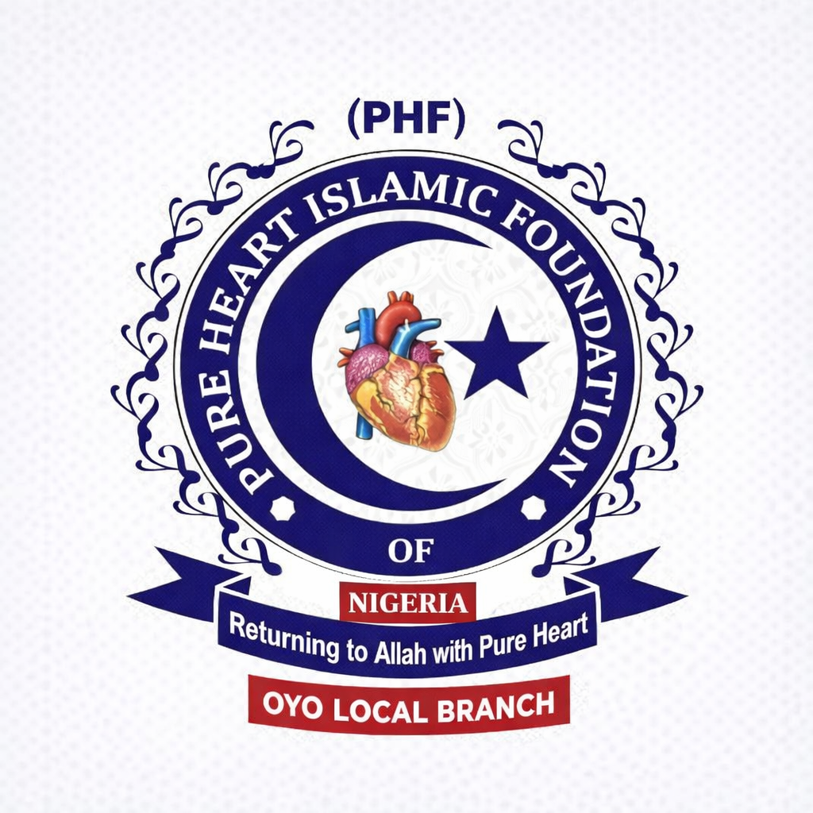

Building Hearts, Serving Humanity
Pure Heart Islamic Foundation (PHF) is a non-governmental, non-profit organization dedicated to the holistic development of the Muslim Ummah. Our Oyo Local Branch focus is on nurturing spiritual growth, academic excellence, and social welfare.
We strive to create a community where Islamic values guide our daily lives and our contributions to society.
📍 Oyo Local Branch Office, Oyo State, Nigeria
📧 phfoyobranch@gmail.com
📞 +234 (0) XXX XXX XXXX
Member Dashboard Login